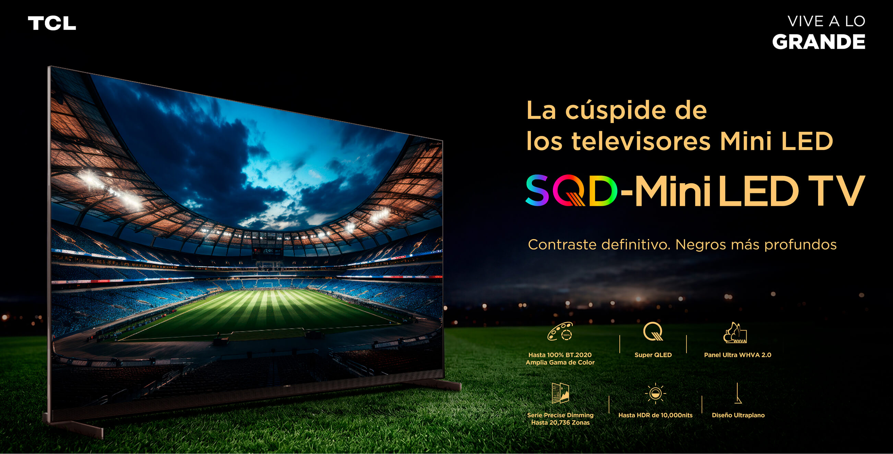
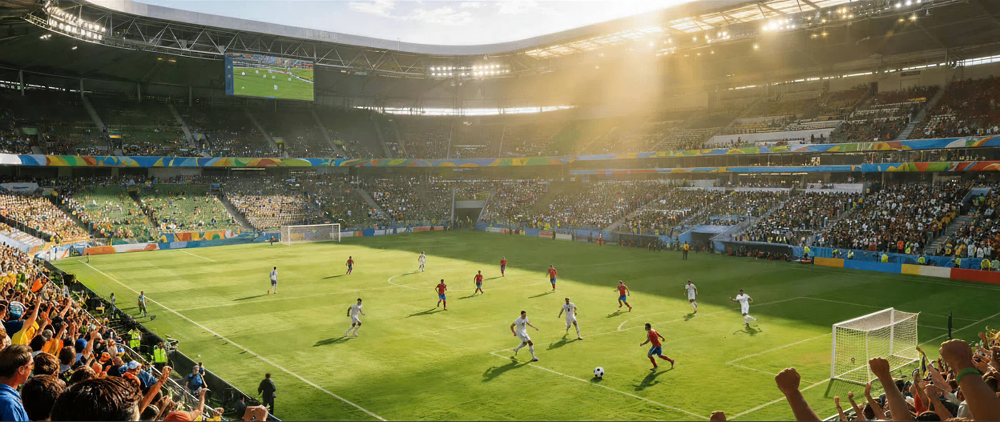
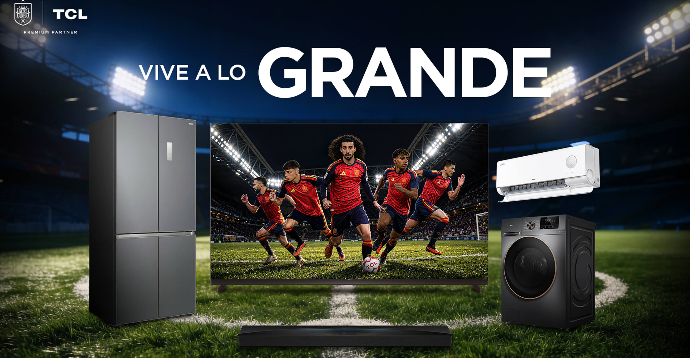
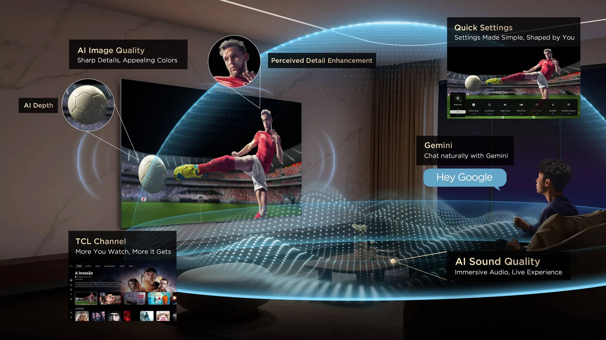
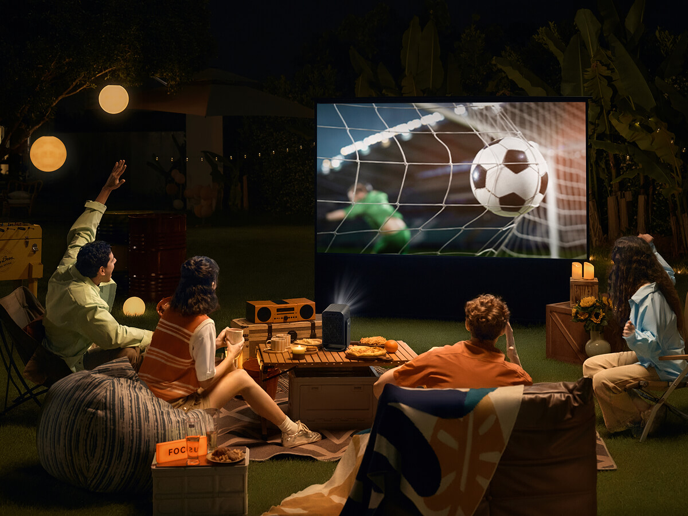
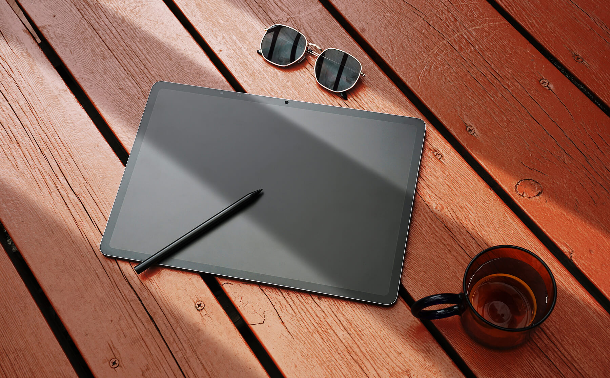

En colaboración con TCL
Mucho más que noventa minutos: así se vive el Mundial desde casa
TCL y la RFEF impulsan nuevas formas de disfrutar de la selección gracias a la tecnología conectada al hogar
Seguir leyendoEl Mundial de fútbol entra en su fase decisiva y, en España, los partidos de la selección se viven con máxima emoción, reuniendo a familiares y amigos frente al televisor.
Pero la pasión por este deporte va mucho más allá de los noventa minutos. Hoy, la tecnología permite disfrutar de cada encuentro de una forma más conectada e inmersiva. Con ese objetivo, TCL, partner oficial de la RFEF en la categoría de electrónica del hogar desde 2023, acompaña a la selección española y a los aficionados para enriquecer la forma en que vivimos el fútbol dentro y fuera del terreno de juego.
El partido empieza mucho antes del pitido inicial
Al llegar la jornada que tanto esperamos, la del partido decisivo, la confianza se centra en que Pedri, Oyarzábal, Unai Simón, Lamine Yamal y todo el resto del equipo estén realmente inspirados. Pero el fútbol no es solo de quienes saltan al césped. Cada aficionado tiene sus propios rituales, esas costumbres que forman parte esencial de la experiencia. Y cuando se va a disfrutar desde casa, hay que prepararlo todo para que nada falle. Porque el fútbol es, sobre todo, compartir.

En esta época del año, además, el calor suele ser un invitado más. Mientras las bebidas esperan a los familiares y amigos, contar con un frigorífico espacioso y bien integrado, gracias a tecnologías de diseño como Free Built-In, de TCL, ayuda a que todo esté listo y bien organizado. Al mismo tiempo, en el salón, no puede faltar el aire acondicionado. La serie FreshIN 3.0, por ejemplo, destaca por su capacidad para renovar el aire y mantener un ambiente confortable en todo momento. Gracias a estas soluciones todos podremos centrarnos en lo que de verdad importa, lo que ocurre en el terreno de juego.
“La colaboración entre TCL y la RFEF refleja una visión compartida, la de acercar el fútbol a los aficionados y enriquecer la forma en que lo viven en su día a día”
Aunque la preparación del partido también se vive fuera de casa. En las horas previas, aprovechamos los desplazamientos para revisar las estadísticas o el análisis de los expertos. Para ello, los smartphones y las tablets de la serie NXTPAPER facilitan la visualización de esos datos gracias a su pantalla diseñada para mejorar la visibilidad. Tampoco faltan esas supersticiones que nos acompañan a todos, como ponerse la camiseta que llevábamos cuando marcó Iniesta en Sudáfrica. Una lavadora equipada con SuperDrum permite tenerla en perfecto estado en el momento justo.

Un estadio en el salón
Y cuando por fin llega la hora del partido, todo lo que ha ocurrido durante la jornada desemboca en un único espacio. Las bebidas y los aperitivos ya están preparados y cada uno ocupa su lugar en el salón. Durante noventa minutos, el hogar se convierte en una extensión del estadio. La selección juega a miles de kilómetros de distancia, pero la sensación es la de ser parte de algo mucho más grande, de vivir cada ocasión, cada parada y cada gol en tiempo real junto a millones de aficionados.
En esa experiencia, el televisor se convierte en el auténtico protagonista. Buscamos sentirnos dentro del partido. Los encuentros de un Mundial se deciden por detalles mínimos: un desmarque entre líneas, un cambio de ritmo, un toque sutil, un regate vertiginoso e inesperado. Cuanto mayor es la pantalla y más precisa es la imagen, mejor apreciaremos cada matiz, más cerca estaremos de vivir una retransmisión realmente inmersiva.

Esa búsqueda de una experiencia más inmersiva ha impulsado el auge de los televisores de 75" o más y de las tecnologías Mini LED. Los aficionados buscan recrear en casa una sensación similar a la que se vive en el estadio, ampliando el campo de visión sin perder un solo detalle. Precisamente, TCL es hoy líder global en las categorías de televisores de gran formato y con tecnología Mini LED, impulsando una evolución en la imagen orientada a disfrutar del deporte con una calidad óptima.
Uno de los avances principales que explican por qué TCL es la marca del Mini LED número uno del mundo es la tecnología SQD-Mini LED, presente en modelos como el C7L o el Q7DP Pro. Este sistema combina un control especialmente preciso de la iluminación con un nivel muy alto de brillo y una gestión avanzada del color. De esta forma, el resultado es una imagen que se adapta a las exigencias de cualquier retransmisión deportiva, con una representación más profunda y más realista de todo lo que ocurre sobre el terreno de juego.
“TCL cuenta con modelos como el C7L o el Q7DP Pro concebidos para ofrecer una imagen capaz de seguir el ritmo vertiginoso del fútbol moderno"
Sus tecnologías SQD-Mini LED, junto con sistemas avanzados de procesamiento inteligente, trabajan para mejorar continuamente aspectos como el brillo, el contraste, la definición o la fluidez de movimiento. El resultado es una imagen que mantiene toda su precisión incluso en las acciones más rápidas, permitiendo seguir el juego con una claridad que ayuda a apreciar cada detalle.

La diferencia se observa especialmente en el fútbol. Los contrastes entre zonas iluminadas y sombreadas del estadio, la intensidad de los colores del césped o de las equipaciones y la velocidad de la acción demandan contar con el mejor rendimiento visual. Con SQD-Mini LED, la iluminación se distribuye con una enorme precisión, permitiendo que las zonas brillantes destaquen con intensidad sin sacrificar ningún detalle en las áreas más oscuras. Al mismo tiempo, la fidelidad cromática contribuye a reproducir los colores con naturalidad y riqueza, generando una imagen más cercana a la percepción del ojo humano.
La diferencia se ve especialmente en los momentos más intensos. Cuando España encadena una presión alta, cuando contemplamos un contragolpe vertiginoso o en esas repeticiones en las que no acaba de quedar clara una jugada polémica. La imagen conserva la nitidez necesaria para que nada se pierda por el camino.
La gestión precisa de la iluminación permite distinguir mejor las zonas más oscuras y más brillantes de la pantalla, mientras que la fidelidad cromática ayuda a reproducir los colores con naturalidad. La sensación de claridad y realismo hace que el espectador permanezca conectado a la acción en todo momento.

Además, el Mundial se juega a distintas horas y en escenarios muy diferentes. Hay encuentros que coinciden con la luz intensa de la tarde y otros que se prolongan hasta la noche. Contar con un televisor capaz de mantener un alto nivel de brillo y una imagen consistente permite disfrutar del partido con la misma calidad independientemente de la hora o de la cantidad de luz que entre por las ventanas.
Pero una gran experiencia deportiva no se construye solo con imagen. Quienes han vivido un gran partido en directo saben que buena parte de la emoción reside en el ambiente. El murmullo de la grada cuando el balón se acerca al área o ese grito unánime ante un gol en los últimos minutos de juego forman parte del espectáculo. Y nada mejor para sentir ese ambiente que una barra de sonido como la TCL A65K. Su sonido envolvente aporta profundidad en cada momento del encuentro, recreando una atmósfera que acerca al espectador a la impresión de estar sentado en el estadio.
Y aunque el salón sigue siendo el escenario por excelencia para vivir los grandes partidos, el verano también abre la puerta a nuevas formas de disfrutar del fútbol. Cuando cae el sol y el calor da tregua, muchas reuniones se trasladan a las terrazas, los patios o los jardines de los hogares. El proyector TCL C1 es una magnífica alternativa para disfrutar del partido sin que la imagen pierda un ápice de calidad. Con él, es posible convertir una pared exterior en una pantalla gigante y seguir el encuentro con todo el detalle bajo las estrellas.
El fan de la segunda pantalla y el pospartido
Ahora bien, todos sabemos que el pitido final no siempre marca el término de la experiencia en el fútbol. El partido continúa en esa conversación que se traslada a las redes sociales o a las repeticiones de las mejores jugadas. Y también durante el partido, con las reacciones que se comparten en tiempo real. Porque el aficionado ya no es un simple espectador. También comenta, compara, debate y prolonga la emoción a través de diferentes pantallas que tiene a su lado.
“La alianza entre la RFEF y TCL encuentra su sentido en esa conexión entre el fútbol y los hogares antes, durante y también después del partido”
En lo que llamamos ecosistema de segunda pantalla, dispositivos como la tablet TCL NXTPAPER 14, con su formato amplio y su tecnología de pantalla pensada para reducir reflejos, permiten seguir estadísticas, leer análisis tácticos o revisar en directo la evolución del partido sin perder ni un detalle de la pantalla principal. También es el espacio perfecto para esa parte más social que nos lleva a compartir memes o comentarios con otros aficionados mientras se sigue el encuentro. Todo ello se integra dentro del ecosistema de Google TV, categoría en la que TCL es la marca número 1 mundial.

Y cuando el partido termina, para muchos aficionados empieza otra forma de vivir el juego. Qué mejor que recrear el encuentro desde otra perspectiva. Esto lo saben muy bien los gamers, que se encuentran en un monitor como el TCL 27P2A Pro la fluidez y respuesta que necesitan para una experiencia de juego precisa y envolvente para tratar de reproducir las jugadas de las estrellas de la selección.
“Con el proyector TCL C1 es posible convertir una pared exterior en una pantalla gigante y seguir el encuentro con todo el detalle bajo las estrellas”
La colaboración entre la RFEF y TCL encuentra su sentido en esa conexión entre el fútbol y los hogares antes, durante y también después del partido. Desde el inicio de su alianza en 2023, ambas entidades han trabajado con el objetivo de acompañar a la selección española y a su afición, dentro y fuera del terreno de juego. Una colaboración que también refleja la apuesta de TCL por la innovación, respaldada por reconocimientos como Mini LED número uno del mundo, televisor número 1 mundial de 75"+ y Google TV número 1 mundial. Porque mientras los jugadores buscan llegar lo más lejos posible en el Mundial, millones de aficionados ocupan su espacio frente a las pantallas, compartiendo nervios y asentando innumerables recuerdos que permanecerán en todos mucho después del pitido final.